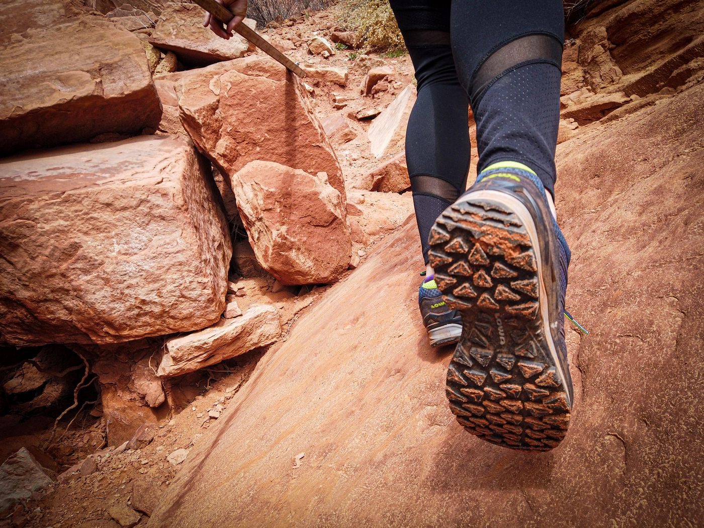

Wear a lightweight, synthetic trail shoe or hiking boot that isn't waterproof, with thin wool or synthetic socks. On a water hike your feet get wet no matter what you wear, so the shoe has three jobs: protect your toes, grip wet rock and mud, and drain and dry fast. Sandals, water shoes, leather boots and waterproof boots all do those jobs badly.
What counts as a water hike?
A water hike is any hike of several miles with frequent stream crossings or long stretches of wading in water that's at least ankle deep. You have no way to keep your feet dry. The crossings are too wide to hop on rocks, and the water comes in over the top of a boot.
Southern Utah has some of the best: the Zion Narrows, Paria Canyon, Coyote Gulch, Death Hollow, Kanarraville Falls and the Escalante River. In Paria Canyon and Coyote Gulch you can cross the stream dozens of times in a single mile. In the Paria you wade for at least 20 of the 38 miles.
Which footwear works, and which doesn't?
| Footwear | Verdict | Why |
|---|---|---|
| Synthetic trail shoe or boot, not waterproof | Yes | Built for hiking, lets water out, dries fast. |
| Sandals | No | No toe protection on river cobbles, sunken logs and roots. Pebbles and sand get trapped under your foot. Poor grip on slick ground, and a footbed that wasn't built for miles. |
| Water shoes | No | Made for boating and for lounging by the water. The sole and the support aren't built for hiking miles. |
| A second pair to change into at crossings | No | With dozens of crossings in a mile, you'd never stop changing shoes. If changing is practical, it isn't a water hike. |
| Waterproof shoes and boots | No | Water comes in over the top and can't get out through the fabric. You walk with a small lake around each ankle: heavy, and a fast route to blisters and trench foot. |
| Leather boots | No | Slow to dry. |
| Neoprene socks | Cold water only | They don't keep feet dry. Like a wetsuit, they hold a thin layer of water that your body warms. |
| Gaiters | Optional | They don't seal out water. They keep some debris out, and make it slower to empty your shoes when debris gets in anyway. |
| Waders | Not for these canyons | Built for fishing, not for hard walking in and out of shallow water. They can make sense in the Zion Narrows in cold weather, where you stand in knee-deep cold water nearly the whole time. |
One honest note: for the Zion Narrows you don't need any of this advice. Gear shops in Springdale rent complete Narrows packages with boots, poles and dry suits.
Which shoes do desert guides wear?
These models were favorites among desert guides and experienced water hikers when we last updated our list in July 2025. None of them has "GTX" or "All-Weather" in its name.
- LOWA Fortux
- LOWA Amplux 2
- HOKA Anacapa Breeze
- Altra Lone Peak Hiker
Our guides hike in LOWA boots, and our trip handbooks recommend them by name. Any lightweight synthetic shoe or boot that drains and dries will do the job.

Is it a problem to hike all day in wet socks and shoes?
Less than you think. Hiking in wet footwear can be comfortable for days, and blisters are usually no worse than on a dry trail. Grit causes blisters. Water doesn't. Wet feet in clean socks are fine for a day. Wet feet with sand ground between sock and skin will ruin a trip.
- Rinse at every long break. Pull off your socks, swish sock and foot in the water, sluice the silt out of your shoes and put them back on.
- Wear thin wool or synthetic socks. Cotton and heavy ski socks are poor choices, even in the cold.
- Break your shoes in. Walk 30 to 50 miles in them before the trip, in the socks you'll wear.
- Tape early. If you blister easily, tape your feet before you start, with kinesiology tape or climbing tape.
- Air your feet. Wet feet soften. Take shoes and socks off at long stops.
On a multi-day trip
- Skip the fresh dry socks in the morning. On a wet route they're soaked and full of silt five minutes from camp, and then you own two wet pairs.
- Rinse the day's socks in the evening, wring them, hang them overnight and put the same pair on again, damp or not.
- Keep one pair of socks dry for camp and for your sleeping bag. Put them on the moment you stop walking.
- Bring light camp shoes.
- Your shoes may not dry overnight. That's fine. They're going straight back in the river.
What about cold water?
Neoprene socks earn their place in cold conditions only. They come in different thicknesses. If you hike in a 2 to 3 millimeter sock, buy your shoes larger to avoid pressure points and blisters. Few hikers find long miles in stiff neoprene comfortable. Our own habit is to carry them only on very early or very late season water hikes, and to wear them only where we must.
Cold shows up where you may not expect it. The pools in Buckskin Gulch are cold even in summer and can be thigh deep to chest deep. On a winter trip at the bottom of Paria Canyon, in 15°F air, my boots froze solid overnight and I thawed them with boiling water at 5am.
Do I need trekking poles?
Yes. Poles give you two more points of contact on a river bottom you can't see. On our water hikes poles are mandatory, and we provide them.
How do I get ready?
Water hiking is a skill like any other. Start small. Try your shoes and socks in a local stream before you commit to a long day of wading or a multi-day trip. Bring blister care and a spare pair of socks, and look after your feet before they complain.
Where this comes from
- Dreamland Safari Tours, How to Choose the Best Shoes for Water Hiking: 8 Things to Know, last updated July 15, 2025.
- Dreamland Safari Tours, Your First Backpacking Trip: What Actually Happens Out There, August 14, 2026 (socks, grit, poles).
- Sunny Stroeer, A Love Letter to Paria Canyon (wading miles, frozen boots).
- Andrea Jasper, Hiking Buckskin Gulch, October 4, 2020 (cold pools).